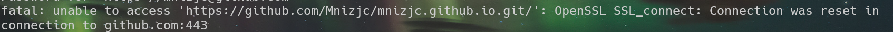
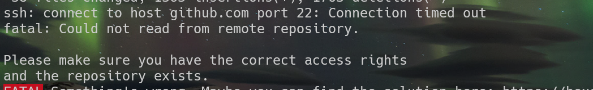
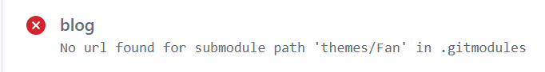
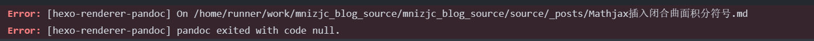

Hexo CI/CD实录
因为我这个地区用git连接github经常出现问题，导致我有时候想写个文章，虽然写完了，但是从本地更新到github的时候非常痛苦，经常喜欢出点小问题，以下截图仅供欣赏


最后一张图的问题真的存在，并且刚才就出现了一次，然而在我写完上一篇之后我什么都没做，没删仓库没改配置
其次，每次写完一篇文章之后还要输入一次账号和github私人token（后文称ghp），为了不让自己忘掉这玩意，我当时申请完了就把它保存在一个文件里，然后就把它随手撂到了什么地方。我也不记得在哪，就只有每次写完一篇文章之后用everything搜一下在哪，不是搜路径，而是让它找到之后直接打开我好复制粘贴，用完之后就关了。
每次都不能只专注在写文章上而写完之后都必须有一些小动作才能把它正儿八经发布到博客上，太tm恶心了。所以我就开始搜怎么直接把整个hexo博客搬到云上，然后就搜到了一个叫CI/CD的东西，但是打开看了看，又感觉好复杂好累，于是一直鸽到了现在，我准备拿博客的网页当作业展示一下的时候，我又想起来了这个问题，一想就烦到没有心情看别的东西了。所以就在今天，我准备一次性把这玩意搞完，除非累到不行，否则今晚必给它整明白了。
把博客源码push到Github & 一个使用Hexo命令行时免去输入账户密码的小技巧
首先，我的计划是，把博客的源码放到一个私有仓库里，因为我要把ghp直接放到配置文件里，所以仓库必须是私有的。而原来我拿来放博客源码的文件夹blog/里有个.git/文件夹，所以我先把它拷贝了一份再另一个文件夹，把.git删掉然后重新git init配置仓库。
别问为什么不说「复制」，因为之前写c++的时候类的构造函数有两种：「复制构造函数」和「赋值构造函数」而这俩拼音一样，我经常打错，所以我就后来就把「复制」称作「拷贝」就不会出这种歧义的问题了
然而正当我准备把源码push到源码仓库里的时候，上面出现的连不上github的情况又tm出现了。所以我后面用了一下科学上网。我给自己v2ray开的端口是10809，所以就给git配置了一下代理
1 | git config --global http.proxy http://127.0.0.1:10809 |
此时在我v2ray没关的时候，git与github的连接就出过一次问题，不过出了问题也不是啥问题，换个节点就好了。
不过我估计这就是我这次配置的时候用的一个临时的办法，如果之后CI/CD配置完了应该就没这么多动作
至于hexo部署的时候输入用户名和ghp的事，找到博客根目录的_config.yaml的deploy部分改成这样
1 | deploy: |
至于ghp的申请我这里就不赘述了，网上有很多申请ghp的教程。
配置Github Actions以实现CI/CD & 一堆问题
接下来配置CI/CD
在源代码仓库的action中新建一个node.js工作流，我的配置如下
1 | # This workflow will do a clean installation of node dependencies, cache/restore them, build the source code and run tests across different versions of node |
这里一定一定一定要注意一点！在step下的每一步都要求有个run或者uses，记得写完这玩意仔细检查，我因为这破事commit 5遍没过。。。我也是服了，我怎么可以笨到这个境界啊
奥对了，一般此时右边会有个脚本marketplace，上面用到的三个脚本都可以在上面搜到，这里用到的这三个脚本的版本都是截至目前最新版本，如果你想用最新版的就直接在marketplace上搜索对应的脚本名字就好了。
然后就可以点进actions页面再看一眼了，此时这个仓库中一旦有push（即改动）就会执行这个action。
对了，除了刚才提到的run和uses，我还遇到过两个问题：

这玩意的解决方法是在仓库根目录下新建一个.gitmodules，内容如下
1 | [submodule "themes/next"] |
这玩意属于什么语言？我还真不知道怎么高亮这玩意
第二个问题就是pandoc

我来来回回测试了20多次，上面问题解决之后出现的总是这个问题，所以我一直在搜怎么修复pandoc的问题，然而无果，一个晚上，我被这个问题缠了一晚上，凌晨5,6点都还在纠结这个问题该怎么解决。
于是我就放弃了，关了电脑，躺了下来，睡前看看手机，找找困意，但是因为这个问题始终不知道该怎么解决，这种感觉根本不像是之前还没开始搞这玩意的时候那种「无所谓反正可以拖」的感觉，而是（我又要开始我的经典比喻了，还得是高中数学老师教的好）那种「拉s拉到一半挺住甚至缩回去」的感觉，怎么都感觉睡不着，于是打开手机接着搜。此时我都可以把这个错误信息背下来了，在我轻车熟路把错误信息打出来准备搜索的时候，我发现（果然用手打一遍和复制粘贴更容易注意到一些细节）我完全可以换个思路，并且在之前搜索这个问题的时候也有文章这么说到了，那就是：我完全可以换一个渲染器而不用pandoc啊！
于是我的搜索词就变成了「hexo渲染器」，然后找到一个叫markdown-it的渲染器，看上去不错，功能好像还比pandoc多多了。于是我先把本地的pandoc卸载了，安装了一个markdown-it，试了一下，感觉效果还不错，据说还支持上标下标这种我只在typora中见过的语法，索性思路就变成了把pandoc渲染器换成markdown-it，直接开整
测试一下能不能真的渲染出来上下标：H~2~O, E=mc^2^
刚才说了，我把本地的pandoc换成markdown-it，并且根据之前推荐更换库的意见把一些库换完之后，准备重新push到github上，然而，pandoc的报错又出现了，我突然反应过来actions脚本我好像还没改过来，就去改了一下内容：
1 | - name: Install dependencies |
在我点击commit之后，workflow中终于出现了那个本应该早就出现的绿色对勾，太艰难了，泪目了家人们
在此之后，我就简简单单修改了一下配置文件，然后接着push，后面也是一路让人心情愉悦的绿对勾，真爽。
奥对了这里还有一个小插曲。我之前不是.gitmodule里把三个主题都链接到其实际仓库了吗，配置文件就算在本地改了push到github上也不起作用，于是我想起来我好想可以直接在源码根目录下创建一个_config.xxx.yml的配置文件，其中xxx是主题名。
现在基本上就不需要本地的什么东西了，除非改了什么东西比如渲染器或者主题之类的，基本上就可以做到完全在github上操作了，即使换电脑了或者有什么大动作，找个地方 git pull 一下就好了。之后写文章的工作就只有：打开源码仓库，把.com改成.dev进入vscode，在_post下新建文章，写完之后点 Commit & Push 就完事了。
VS Code实现hexo new的文章头
还有一件事（老爹音），在以前的时候新建一篇文章的方法是
1 | hexo new xxx |
现在只有一个vscode，所以就没有每次创建新文章开头那部分的头了，所以就自己添加一个自定义用户代码片段。
左下角设置->代码用户片段->输入markdown->在打开的文件中写入这么一段：
1 | "Hexo title":{ |
这里prefix也不一定是title，你也可以取别的什么名字，比如header或者别的什么，只要确保到时候在文件中你写的东西和你自己在这里设置的一样就好了（这里一样指的是连一个空格或者大小写字母都不能差）。
然后打开设置，右上角有个打开设置(json)，在打开的文件中加入：
1 | "[markdown]":{ |
此时你的vscode web就可以开心的使用代码片段了，快乐写作
PS. 从这篇开始往后所有文章将皆使用Github Actions提供的CI/CD实现自动部署